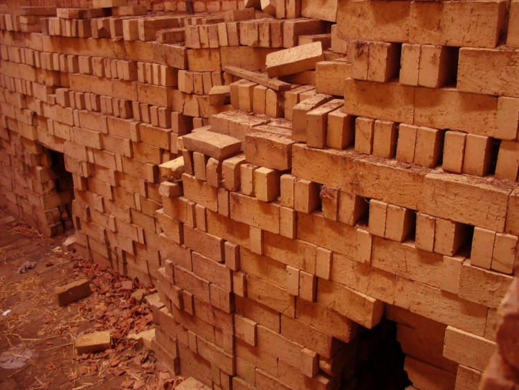

brick making is a programme i decided to value in my community many people do not valuebrick making because
they value it as none profitable.si i decided to come up with this priject

because it will majorly help my people when it rains .ithas been a threat
to community members when it is rainy season.so idecide to come up with this
business because i can build a dam that can also conserve the water.